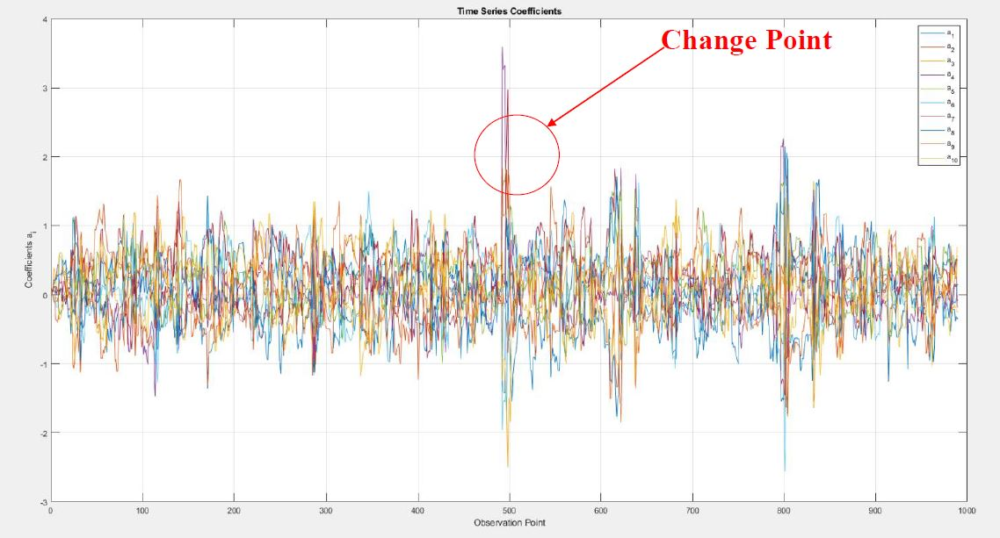
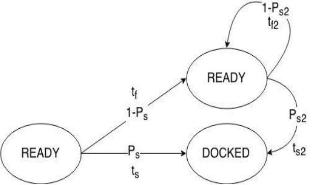
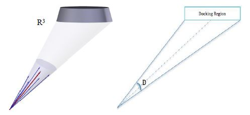

Below is a summary of research projects I have worked on over the years (as an undergraduate and graduate researcher). Relevant papers, posters, notes, and slides are provided for each respective project. Please email me with any comments, questions, or corrections.
The motivation for this project arose from the computational difficulties in approximating
high-dimensional Hamilton-Jacobi-Bellman (HJB) equations associated with stochastic
optimal control. The optimal value function need not be twice differentiable, and
minimizing a pointwise differential residual does not by itself encode the
viscosity-solution conditions. The idea behind this work is to incorporate these
conditions directly into reinforcement learning for approximating the value function
and the corresponding feedback control.
To do so, we developed the Viscosity-Informed Generative Actor-Critic (V-GAC) method.
The actor approximates the feedback control, while the critic approximates the value
function. The critic combines temporal-difference learning with penalties for sampled
viscosity subsolution and supersolution inequalities. These inequalities are evaluated
using test functions generated through Moreau envelopes. A third, generative proximal
network learns approximate contact mappings, avoiding the need to repeatedly solve an
inner optimization problem during training.
In [1], under the stated structural and asymptotic assumptions, uniform limit points of
the value-function approximations satisfy the viscosity inequalities on the sampled
test family. Numerical experiments show reduced sampled viscosity violations and
improved control performance under the tested perturbations of the dynamics. The
practical goal of this project is to develop computational methods for high-dimensional
feedback control that account for the viscosity formulation of the underlying HJB
equation.
[1] Golpashin, A. E., Puthumanaillam, G., Ornik, M., & Conway, B. A. (2026). Viscosity-Informed Generative Actor-Critic for High-Dimensional Stochastic Optimal Control. arXiv preprint, arXiv:2605.15668.
The motivation for this project [1] arose from the computational cost of
solving the Hamilton-Jacobi-Bellman (HJB) equation using grid-based methods.
The value function may have large variations or regions of
non-differentiability, where a finer distribution of nodes is needed to
capture the solution. Increasing the node density throughout the domain,
however, also increases the computational burden, particularly as the
state dimension grows.
Several works have previously addressed this difficulty through the choice
of grid and interpolation scheme. Chilan and Conway [2] combined
quasi-Monte Carlo grids with kriging regression to approximate HJB
viscosity solutions, while Kang and Wilcox [3] developed a sparse-grid
characteristics method for optimal feedback control. The idea behind
this project is to adapt the node distribution according to the local
properties of the computed solution while reducing the overall node
population.
To do so, we formulated adaptive grid refinement as a reinforcement learning
problem. Starting from a grid generated using quasi-Monte Carlo sampling,
the agent observes the local node density, the HJB residual, and a
normalized measure of proximity to the domain boundary. It then selects
a neighborhood and the proportion of nodes to add or remove within it.
The reward balances reductions in node count with reductions in a sampled
global HJB residual norm. The observation and action spaces have fixed
dimensions, allowing the same policy to be applied to problems with
different state dimensions.
In [1], the agent was trained on a two-dimensional minimum-time control
problem and subsequently applied without retraining to three-dimensional
spacecraft detumbling and six-dimensional spacecraft attitude control.
These numerical experiments demonstrated reductions in node population
with lower or comparable HJB residuals. We also integrated the refinement
policy into a semi-Lagrangian fixed-point solver, allowing the grid to be
modified during the solution process. For the two-dimensional example,
this approach converged with fewer nodes and a lower residual than the
static-grid computation.
[1] Golpashin, A. E., Clark, M. T., & Conway, B. A. (2025).
Adaptive Grid Refinement for Optimal Feedback Control.
47th Annual AAS Guidance, Navigation, and Control Conference,
AAS Paper 25-056.
[2] Chilan, C. M., & Conway, B. A. (2020).
Optimal nonlinear control using Hamilton–Jacobi–Bellman viscosity
solutions on unstructured grids.
Journal of Guidance, Control, and Dynamics,
43(1), 30–38.
[3] Kang, W., & Wilcox, L. C. (2017).
Mitigating the curse of dimensionality: sparse grid characteristics
method for optimal feedback control and HJB equations.
Computational Optimization and Applications,
68(2), 289–315.
The motivation
for this project arose in experimental studies looking at relationship between
thrust magnitude and propagation of uncertainty in the produced moment. Other
motivations included the European Space Agency’s LISA Pathfinder mission which required
small tolerances on the produced thrust error due to the objective of the mission.
The first phase of the project was focused on deriving the stochastic nonlinear optimal
control for the rigid body rotational dynamics. The uncertainty in the
rotational equations of motion was modeled through stochastic differential
equations in control multiplicative form where the noise was multi-dimensional Brownian
motion. To derive the optimal control, approximations of the optimal value
function and consequently of the optimal control in the ring of formal power
series over ℝ were found. This series-based technique is due to Al’brekht’s work in 1961 where it has also been studied and extended by other
mathematicians in the past two decades. Due to the noisy nature of our application,
the Hamilton-Jacobi-Bellman’s partial differential equation inherited an extra
diffusive term which needed to be accounted for when formulating the Al’brekht’s method. Shown
in [1], the rigid body rotational equations of motion were stabilized using the
discussed method.
The second phase of the project included the addition of the attitude kinematics which extended
the state space to 6 dimensions. The kinematics were parametrized using the
parametrization introduced by Tsiotras et al. which allowed the linearization
of the dynamics for control derivation. The singularity properties of this
parametrization are desirable and are discussed in [2]. In the same work, the existence and uniqueness
of the linear control as well as the nonlinear control under certain conditions
were proven. The Monte Carlo simulations in [2] showed the desirable control-energy
saving properties of the stochastic nonlinear controller. Reference [2] also provides the conditions for which the stochastic nonlinear controller outperforms
the linear quadratic regulator. As a future direction of research, I am interested in a similar analysis for underactuated attitude systems, as well as online efficient methods that would extend the local control to a larger domain in the state-space.
[1] Golpashin, A. E., Yeong, H. C., Ho, K., & Namachchivaya, N. S. (2018). Stochastic attitude control of spacecraft under thrust uncertainty. In AAS/AIAA Astrodynamics Specialist Conference, 2017 (pp. 205-218). Univelt Inc.
[2] Golpashin, A. E., Yeong, H. C., Ho, K., & Sri Namachchivaya, N. (2020). Spacecraft attitude control: a consideration of thrust uncertainty. Journal of Guidance, Control, and Dynamics, 43(12), 2349-2365.
This project is an ongoing effort focused on non-Gaussian filtering
and reinforcement learning for detecting volumetric network anomalies,
such as distributed denial-of-service (DDoS) attacks. The motivation
for this work comes from the burstiness, heavy-tailed fluctuations,
and long-range dependence observed in network traffic [1][2].
The idea behind the project is to account for these properties when
estimating traffic dynamics and distinguishing anomalous volume changes
from ordinary traffic fluctuations.
The first phase of the project [5] focused on representing the traffic
through an adaptive autoregressive model. The coefficients of this
model describe how the current packet count depends on recent
observations, and changes in the estimated coefficients provide
features for detecting a volumetric anomaly. The Kalman–Lévy filter
[4] provided a starting point for exploring a filtering model that
combines Gaussian noise in the coefficient-update equation with an
α-stable residual in the observation equation. For controlled
numerical experiments, traffic is generated using an intermittency
map [3], with changes in the generator parameters used to introduce
synthetic volume shifts.
A subsequent phase of the project [6] incorporated reinforcement
learning into the detection process. Gaussian and heavy-tailed
filtering updates are compared using a posterior error-scale
criterion. A Q-learning agent then uses recent filter-selection
statistics and an estimate of the traffic location to adjust the
alarm threshold and the model-noise scale. The reward is designed
to encourage timely detection while penalizing false alarms and
missed detections. Preliminary comparisons on simulated traffic
showed fewer false alarms and missed detections with the learned
threshold than with the tested static threshold.
The ongoing goal of this research is to develop an adaptive detection
framework that accounts for impulsive traffic fluctuations while
limiting detection delay and false alarms. Further investigation
includes the sensitivity of the filtering and detection methods to
the traffic model, noise parameters, and learning settings.

[1] Willinger, W., Paxson, V., & Taqqu, M. S. (1998).
Self-similarity and heavy tails: Structural modeling of network traffic.
In R. J. Adler, R. E. Feldman, & M. S. Taqqu (Eds.),
A Practical Guide to Heavy Tails: Statistical Techniques and
Applications (pp. 27–53). Birkhäuser.
[2] Willinger, W., Govindan, R., Jamin, S., Paxson, V., &
Shenker, S. (2002). Scaling phenomena in the Internet: Critically
examining criticality.
Proceedings of the National Academy of Sciences,
99(Suppl. 1), 2573–2580.
[3] Arrowsmith, D. K., Barenco, M., Mondragon, R. J., &
Woolf, M. (2004). The statistics of intermittency maps and dynamical
modelling of networks.
In Proceedings of the 16th International Symposium on Mathematical
Theory of Networks and Systems. Leuven, Belgium.
[4] Sornette, D., & Ide, K. (2001). The Kalman–Lévy filter.
Physica D: Nonlinear Phenomena,
151(2–4), 142–174.
[5] Golpashin, A. E. (2021).
A Study of Non-Gaussian Data Assimilation for Volumetric Network
Anomaly Detection. Unpublished research report.
[6] Golpashin, A. E.
A Novel Volumetric Network Anomaly Detection Method.
Research presentation.
This
was an undergraduate robotics project I worked on for about two years. At the
time, the lab I was working with was interested in autonomous docking and
undocking of quadrotors (UAVs) for applications in construction sites [1]. I
and Mihir Patel were
tasked with developing a path planning algorithm to minimize the time-to-dock
while increasing the probability of docking (the Markov chain figure below). The motivation for the proposed algorithm was drawn
from the work of Prof. Bruce Donald in Error Detection & Recovery [2]. My contribution was to develop an algorithm which included two additive quantities
as its cost functional: one, minimizing the shortest distance between the
docking point, and the other increasing the curvature of the path. The increase
in curvature resulted in the desired robustness when disturbances were present. This path planning algorithm was then used along with the PID controller for flight control. Through Monte Carlo simulations and test flights, the robustness of the
algorithm was shown. The task of increasing the probability of docking was
accomplished as docking was made possible from any initial condition in the
vicinity of the docking port.

[1] DeGol, J., Hanley, D., Aghasadeghi, N., & Bretl, T. (2015, September). A passive mechanism for relocating payloads with a quadrotor. In 2015 IEEE/RSJ International Conference on Intelligent Robots and Systems (IROS) (pp. 4337-4342). IEEE.
[2] Donald, B. R. (1987). Error detection and recovery in robotics. Springer-Verlag.
